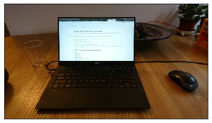
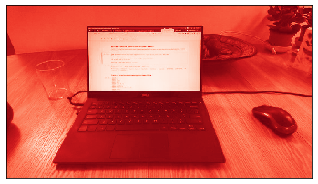
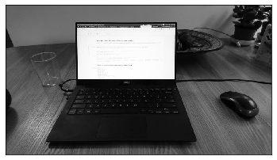
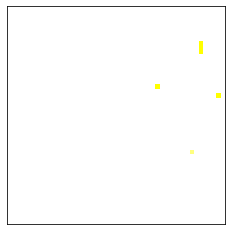
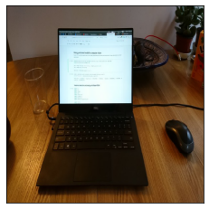
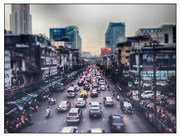
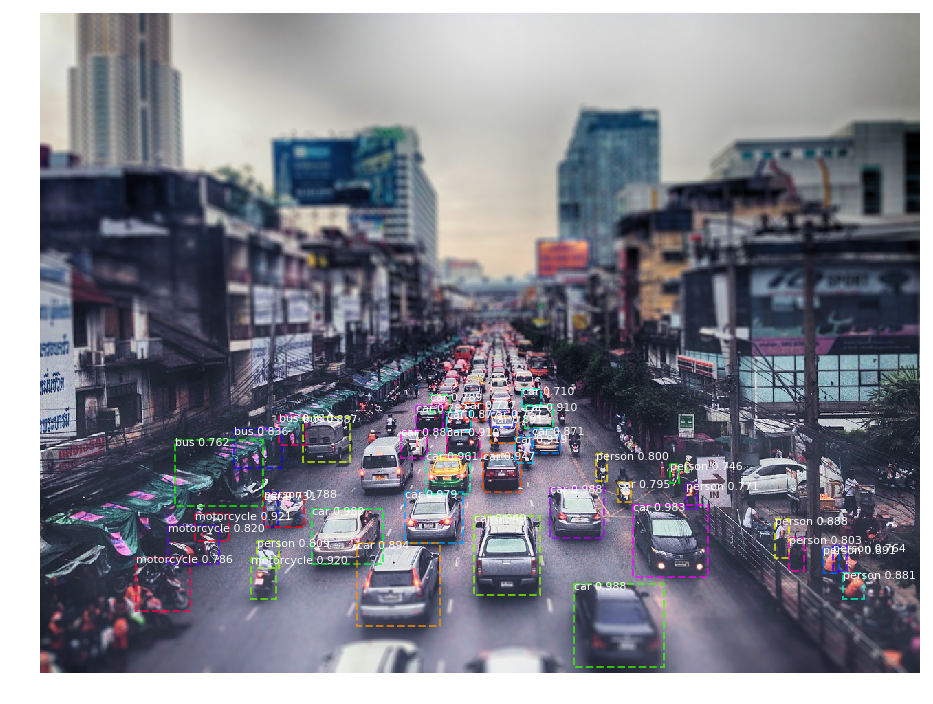

Introduction to Pretrained Models for Computer Vision
 Photo by Jon Flobrant on Unsplash
Photo by Jon Flobrant on Unsplash
Introduction to Pretrained Models for Computer Vision
This notebook is based on the Deep Learning course from the Master Datascience Paris Saclay. Materials of the course can be found here .
It aims to get some hands-on experience with pre-trained Keras models are reasonably close to the state-of-the-art of some computer vision tasks. The models are pre-trained on large publicly available labeled images datasets such as ImageNet and COCO .
This notebook will highlights two specific tasks (or at least try):
- Image Classification: Predict only one class label per-image (assuming a single centered object or image class).
- Object detection and instance segmentation: Detect and localise all occurrences of objects of a predefined list of classes of interest in a given image.
# Display figure in the notebook
%matplotlib inline
# Load packages
import cv2
import matplotlib.pyplot as plt
import numpy as np
import os
import zipfile
from keras import backend
from keras.applications import inception_resnet_v2, mobilenet, resnet50
from skimage.io import imread
from skimage.transform import resize
from time import time
from urllib.request import urlretrieve
Working with images data
For the beginning, we will see how to work with images data, how they are represented in memory, how to load it, how to modify it, ect.
Let’s use the library
scikit-image
to load the content of a JPEG file into a numpy array.
pic = imread('laptop.jpeg')
The type of the variable is: <class 'imageio.core.util.Array'> (which is a particular class of np.ndarray).
An image is described by three parameters: its height; its weight; its color channels (RGB). Each of them corresponds to a dimension of the array.
The shape of the picture is (450, 800, 3).
For efficiency reasons, the pixel intensities of each channel are stored as 8-bit unsigned integer taking values in the $[0, 255]$ range.
The type of the elements in the array is uint8, the minimum value of the pixels is 0 and the maximum value is 255.
# Look at the picture
fig = plt.imshow(pic)
fig.axes.get_xaxis().set_visible(False)
fig.axes.get_yaxis().set_visible(False)
plt.show()

The size in bytes of a Numpy array can be computed by multiplying the number of elements by the size in byte of each element in the array. The size of one element depend of the data type.
Using the shape, the size of the image is 1.08MB, the computation is 450 (height) * 800 (weight) * 3 (channel) * 8 (# bits to represents one element) / 8 (# bits in one byte).
We can check this results using the function `nbytes`: 1.08MB.
Indexing on the last dimension makes it possible to extract the 2D content of a specific color channel. Consider the following example for the red channel.
pic_red = pic[:, :, 0]
fig = plt.imshow(pic_red, cmap=plt.cm.Reds_r)
fig.axes.get_xaxis().set_visible(False)
fig.axes.get_yaxis().set_visible(False)
plt.show()

Now, we consider the grey-level version of the image with shape (height, weight). To compute this version, we compute the mean of each pixel values across the channels.
pic_grey = pic.mean(axis=2)
fig = plt.imshow(pic_grey, cmap=plt.cm.Greys_r)
fig.axes.get_xaxis().set_visible(False)
fig.axes.get_yaxis().set_visible(False)
plt.show()

The uint8 integer data type can not represent the grey pixels because they have floating points. Anyway, Numpy represents it as float64 data type.
The size of the grey picture is 2.88MB (which is higher than the color picture, it is due to the `float` data type.
The expected of range values for the new pixels is the same as before, $[0, 255]$ (0 for white pixels and 255 for black ones).
Resizing images, handling data types and dynamic ranges
When dealing with an heterogeneous collection of image of various sizes, it is often necessary to resize the image to the same size. More specifically:
- for image classification, most networks expect a specific fixed input size;
- for object detection and instance segmentation, networks have more flexibility but the images should have approximately the same size as the training set images.
Furthermore, large images can be much slower to process than smaller images. This is due to the fact that the number of pixels varies quadratically with the height and width.
# Resize the picture to have a 50*50 picture.
pic = imread('laptop.jpeg')
pic_lowres = resize(pic, output_shape=(50, 50), mode='reflect', anti_aliasing=True)
fig = plt.imshow(pic_lowres, interpolation='nearest')
fig.axes.get_xaxis().set_visible(False)
fig.axes.get_yaxis().set_visible(False)
plt.show()
The values of the pixels of the low resolution image are computed by combining the values of the pixels in the high resolution image. The result is therefore represented as floating points.
The type of the elements of the array is float64, and the size of the image is 0.06MB.
Careful, by conventions, both skimage.transform.imresize and plt.imshow assume that floating point values range from $0.0$ to $1.0$ when using floating points as opposed to $0$ to $255$ when using 8-bit integers.
So, the range of pixel values of the low resolution image is [0.0, 0.996].
Note that Keras on the other hand might expect images encoded with values in the $[0.0, 255.0]$ range irrespectively of the data type of the array. To avoid the implicit conversion to the $[0.0, 1.0]$ range, we can use the preserve_range=True option in the resize function. But the dtype will change to float64.
pic_lowres_larran = resize(pic, output_shape=(50, 50), mode='reflect', anti_aliasing=True, preserve_range=True)
And, the range of pixel values of the low resolution image with `preserve_range=True` is [0.0, 254.0].
Warning: The behavior of plt.imshow depends on both the dtype and the dynamic range when displaying RGB images. In particular, it does not work on RGB images with float64 values in the $[0.0, 255.0]$ range.
fig = plt.imshow(pic_lowres_larran, interpolation='nearest')
fig.axes.get_xaxis().set_visible(False)
fig.axes.get_yaxis().set_visible(False)
plt.show()

For correctly displaying an RGB array with floating point values in the $[0.0, 255.0]$ range, we can divide all the values by $255$ or change the dtype to integers.
fig = plt.imshow(pic_lowres_larran / 255.0, interpolation='nearest')
fig.axes.get_xaxis().set_visible(False)
fig.axes.get_yaxis().set_visible(False)
plt.show()
fig = plt.imshow(pic_lowres_larran.astype(np.uint8), interpolation='nearest')
fig.axes.get_xaxis().set_visible(False)
fig.axes.get_yaxis().set_visible(False)
plt.show()

(Optional) Taking snapshots from the webcam
We are going to use the Python API of OpenCV in order to take pictures.
# Define a function to take a snapshot
def take_snapshot(camera_id=0, fallback_filename=None):
camera = cv2.VideoCapture(camera_id)
try:
# Take 10 consecutive snapshots to let the camera automatically
# tune itself and hope that the contrast and lightning of the
# last snapshot is good enough.
for i in range(10):
snapshot_ok, image = camera.read()
if snapshot_ok:
image = cv2.cvtColor(image, cv2.COLOR_BGR2RGB)
else:
print('WARNING: Could not access the camera!')
if fallback_filename:
image = imread(fallback_filename)
finally:
camera.release()
return image
# Test if the function take_snapshot is working.
pic = take_snapshot(camera_id=0, fallback_filename='laptop.jpeg')
Image Classification
The Keras library includes several neural network models pretrained on the ImageNet classification dataset. A popular model that show a good tradeoff between computation speed, model size and accuracy is called ResNet-50 ( here for the article on Deep Residual Networks).
# Get the ResNet-50 model
model = resnet50.ResNet50(weights='imagenet')
Let’s check that Tensorflow backend used by Keras as the default backend expect the color channel on the last axis. If it had not been the case, it would have been possible to change the order of the axes with pic = pic.transpose(2, 0, 1).
The color channel is on the channels_last.
The network has been trained on (224, 224) RGB images.
None is used by Keras to mark dimensions with a dynamic number of elements. Here, None is the batch size, that is the number of images that can be processed at one. In the following, we will process only image at a time.
# Load and resize the picture
pic = imread('laptop.jpeg')
pic_224 = resize(pic, (224, 224), preserve_range=True, mode='reflect')
The shape of the picture is (224, 224, 3), and the dtype of its elements is float64.
However, the model use float32 dtype. So, we have to convert the picture into float32.
pic_224 = pic_224.astype(np.float32)
fig = plt.imshow(pic_224 / 255, interpolation='nearest')
fig.axes.get_xaxis().set_visible(False)
fig.axes.get_yaxis().set_visible(False)
plt.show()

Note that the image has been deformed by the resizing. In practice, this should not degrade the performance of the network too much. There are two alternatives solutions to that problems:
-
resizing the image so that the smallest side is set to 224;
-
extracting a square centered crop of size $(224, 224)$ from the resulting image.
The shape of the picture is (224, 224, 3), whereas the input shape of the model should be (None, 224, 224, 3). So we have to expand the dimension of the picture.
pic_224_batch = pic_224[None, ...] # or np.expand_dims(pic_224, axis=0)
pic_224_batch is now compatible with the input shape of the neural network, so let’s make a prediction.
%%time
X = resnet50.preprocess_input(pic_224_batch.copy())
pred = model.predict(X)
CPU times: user 1.79 s, sys: 52 ms, total: 1.84 s
Wall time: 1.49 s
Note that we make a copy each time as the function preprocess_input can modify the image inplace to reuse memory when preprocessing large datasets.
The output predictions are a 2D array with:
- One row per image in the batch;
- One column per target class in the ImageNet LSVRC dataset ($1000$ possible classes) with the probabilities that a given image belongs to a particular class. Obviously, the sum of the columns for each row is equal to $1$.
Decoding the predicition probabilities
Reading the raw probabilities for the $1000$ possible ImageNet classes is tedious. Fortunately, Keras comes with an helper function to extract the highest rated classes according to the model and display both class names and the wordnet synset identifiers.
print('Predicted image labels:')
for class_id, class_name, confidence in resnet50.decode_predictions(pred, top=5)[0]:
print(f"\t* {class_name} (synset: {class_id}): {confidence}")
Predicted image labels:
* notebook (synset: n03832673): 0.3599511384963989
* laptop (synset: n03642806): 0.25687211751937866
* desk (synset: n03179701): 0.15139059722423553
* mouse (synset: n03793489): 0.11147501319646835
* desktop_computer (synset: n03180011): 0.051331911236047745
Check on the ImageNet website to better understand the use of the terms notebook in the training set. Note that the network is not too confident about the class of the main object in that image. If we were to merge the notebook and the laptop classes, the prediction will be good.
Furthermore, the network also considers secondary objects (desk, mouse, …) but the model as been trained as an image (multiclass) classification model with a single expected class per image rather than a multi-label classification model such as an object detection model with several positive labels per image.
We have to keep that in mind when trying to make use of the predictions of such a model for a practical application. This is a fundamental limitation of the label structure of the training set.
A note on preprocessing
All Keras pretrained vision models expect images with float32 dtype and values in the $[0, 255]$ range. When training neural network, it often works better to have values closer to zero.
- A typical preprocessing is to center each of the channel and normalize its variance.
- Another one is to measure the
minand themaxvalues and to shift and rescale to the $(-1, 1)$ range.
The exact kind of preprocessing is not very important, but it’s very important to always reuse the preprocessing function that was used when training the model.
Now, we are going to use different model, ResNet50, MobileNet and InceptionResNetV2, to classify the images from Wikipedia. We can then compare the models in both time and prediction accuracy.
We start be defining some function to predict the object in the images.
def classify_resnet50(model, fallback_filename=None):
"""
Function that takes a snapshot of the webcam and display it
along with the decoded prediction of the model and their
confidence level.
"""
# Take a snapshot
pic = take_snapshot(camera_id=0, fallback_filename=fallback_filename)
# Preprocess the picture
pic_224 = resize(pic, (224, 224), preserve_range=True, mode='reflect')
pic_224_batch = pic_224[None, ...]
# Do predictions
pred = model.predict(resnet50.preprocess_input(pic_224_batch.copy()))
# Show the pic
fig = plt.imshow(pic / 255, interpolation='nearest')
fig.axes.get_xaxis().set_visible(False)
fig.axes.get_yaxis().set_visible(False)
plt.show()
# Print the decoded predictions
print('Predicted image labels:')
for class_id, class_name, confidence in resnet50.decode_predictions(pred, top=5)[0]:
print(f"\t* {class_name} (synset: {class_id}): {confidence}")
def classify_mobilenet(model, fallback_filename=None):
"""
Function that takes a snapshot of the webcam and display it
along with the decoded prediction of the model and their
confidence level.
"""
# Take a snapshot
pic = take_snapshot(camera_id=0, fallback_filename=fallback_filename)
# Preprocess the picture
pic_224 = resize(pic, (224, 224), preserve_range=True, mode='reflect')
pic_224_batch = pic_224[None, ...]
# Do predictions
pred = model.predict(mobilenet.preprocess_input(pic_224_batch.copy()))
# Show the pic
fig = plt.imshow(pic / 255, interpolation='nearest')
fig.axes.get_xaxis().set_visible(False)
fig.axes.get_yaxis().set_visible(False)
plt.show()
# Print the decoded predictions
print('Predicted image labels:')
for class_id, class_name, confidence in mobilenet.decode_predictions(pred, top=5)[0]:
print(f"\t* {class_name} (synset: {class_id}): {confidence}")
def classify_inception_resnet_v2(model, fallback_filename=None):
"""
Function that takes a snapshot of the webcam and display it
along with the decoded prediction of the model and their
confidence level.
"""
# Take a snapshot
pic = take_snapshot(camera_id=0, fallback_filename=fallback_filename)
# Preprocess the picture
pic_299 = resize(pic, (299, 299), preserve_range=True, mode='reflect')
pic_299_batch = pic_299[None, ...]
# Do predictions
pred = model.predict(inception_resnet_v2.preprocess_input(pic_299_batch.copy()))
# Show the pic
fig = plt.imshow(pic / 255, interpolation='nearest')
fig.axes.get_xaxis().set_visible(False)
fig.axes.get_yaxis().set_visible(False)
plt.show()
# Print the decoded predictions
print('Predicted image labels:')
for class_id, class_name, confidence in inception_resnet_v2.decode_predictions(pred, top=5)[0]:
print(f"\t* {class_name} (synset: {class_id}): {confidence}")
%%bash
wget https://upload.wikimedia.org/wikipedia/commons/3/3f/JPEG_example_flower.jpg
wget https://upload.wikimedia.org/wikipedia/commons/thumb/8/87/Alcatel_one_touch_easy.jpg/450px-Alcatel_one_touch_easy.jpg
wget https://upload.wikimedia.org/wikipedia/commons/thumb/8/8d/President_Barack_Obama.jpg/480px-President_Barack_Obama.jpg
We will begin the models comparison using the model ResNet50.
# Get the ResNet50 model
model_resnet50 = resnet50.ResNet50(weights='imagenet')
%%time
classify_resnet50(model, 'JPEG_example_flower.jpg')

Predicted image labels:
* pot (synset: n03991062): 0.37311553955078125
* hair_slide (synset: n03476684): 0.08061367273330688
* strawberry (synset: n07745940): 0.06821887940168381
* vase (synset: n04522168): 0.05385832488536835
* ant (synset: n02219486): 0.044536933302879333
CPU times: user 740 ms, sys: 112 ms, total: 852 ms
Wall time: 326 ms
%%time
classify_resnet50(model, '450px-Alcatel_one_touch_easy.jpg')

Predicted image labels:
* cellular_telephone (synset: n02992529): 0.9453017711639404
* radio (synset: n04041544): 0.022191418334841728
* hand-held_computer (synset: n03485407): 0.02068745717406273
* combination_lock (synset: n03075370): 0.0010540278162807226
* pay-phone (synset: n03902125): 0.001006232458166778
CPU times: user 716 ms, sys: 48 ms, total: 764 ms
Wall time: 307 ms
%%time
classify_resnet50(model, '480px-President_Barack_Obama.jpg')

Predicted image labels:
* groom (synset: n10148035): 0.7057098746299744
* suit (synset: n04350905): 0.2643233835697174
* gown (synset: n03450230): 0.009134724736213684
* Windsor_tie (synset: n04591157): 0.008021678775548935
* Loafer (synset: n03680355): 0.007970282807946205
CPU times: user 736 ms, sys: 40 ms, total: 776 ms
Wall time: 310 ms
# Get the MobileNet model
model_mobilenet = mobilenet.MobileNet(weights='imagenet')
%%time
classify_mobilenet(model_mobilenet, 'JPEG_example_flower.jpg')

Predicted image labels:
* lemon (synset: n07749582): 0.3409530222415924
* orange (synset: n07747607): 0.2852575182914734
* sulphur_butterfly (synset: n02281406): 0.1666731983423233
* strawberry (synset: n07745940): 0.09244516491889954
* whistle (synset: n04579432): 0.01351318508386612
CPU times: user 1.72 s, sys: 52 ms, total: 1.77 s
Wall time: 1.56 s
%%time
classify_mobilenet(model_mobilenet, '450px-Alcatel_one_touch_easy.jpg')

Predicted image labels:
* cellular_telephone (synset: n02992529): 0.5218481421470642
* hand-held_computer (synset: n03485407): 0.4698248505592346
* radio (synset: n04041544): 0.004865806549787521
* dial_telephone (synset: n03187595): 0.0011262071784585714
* remote_control (synset: n04074963): 0.0005011822795495391
CPU times: user 420 ms, sys: 12 ms, total: 432 ms
Wall time: 204 ms
%%time
classify_mobilenet(model_mobilenet, '480px-President_Barack_Obama.jpg')
Predicted image labels:
* groom (synset: n10148035): 0.6955855488777161
* Windsor_tie (synset: n04591157): 0.17594707012176514
* suit (synset: n04350905): 0.09634945541620255
* organ (synset: n03854065): 0.006460004951804876
* theater_curtain (synset: n04418357): 0.006234230939298868
CPU times: user 412 ms, sys: 40 ms, total: 452 ms
Wall time: 225 ms
Now, let’s fit the InceptionResNetV2 model.
# Get the InceptionResNetV2 model
model_inception_resnet_v2 = inception_resnet_v2.InceptionResNetV2(weights='imagenet')
%%time
classify_inception_resnet_v2(model_inception_resnet_v2, 'JPEG_example_flower.jpg')
Predicted image labels:
* lemon (synset: n07749582): 0.659601628780365
* orange (synset: n07747607): 0.10027674585580826
* pot (synset: n03991062): 0.09215866029262543
* strawberry (synset: n07745940): 0.012752575799822807
* sulphur_butterfly (synset: n02281406): 0.010476206429302692
CPU times: user 7.52 s, sys: 120 ms, total: 7.64 s
Wall time: 6.52 s
%%time
classify_inception_resnet_v2(model_inception_resnet_v2, '450px-Alcatel_one_touch_easy.jpg')
Predicted image labels:
* cellular_telephone (synset: n02992529): 0.8715960383415222
* hand-held_computer (synset: n03485407): 0.013546744361519814
* radio (synset: n04041544): 0.004702822770923376
* modem (synset: n03777754): 0.004240750335156918
* combination_lock (synset: n03075370): 0.0029042132664471865
CPU times: user 1.59 s, sys: 92 ms, total: 1.68 s
Wall time: 574 ms
%%time
classify_inception_resnet_v2(model_inception_resnet_v2, '480px-President_Barack_Obama.jpg')

Predicted image labels:
* suit (synset: n04350905): 0.39843690395355225
* groom (synset: n10148035): 0.3309420049190521
* Windsor_tie (synset: n04591157): 0.06947924941778183
* theater_curtain (synset: n04418357): 0.04553558677434921
* bow_tie (synset: n02883205): 0.004989056382328272
CPU times: user 1.58 s, sys: 68 ms, total: 1.64 s
Wall time: 574 ms
Instance Detection and Segmentation with Mask-RCNN
Mask-RCNN is a refinement of the Faster-RCNN object detection model to also add support for instance segmentation. The following shows how to use a Keras based implementation provided by Matterport along with model parameters pretrained on the COCO Object Detection dataset .
# Download the model and the COCO trained weights
URL = "https://github.com/ogrisel/Mask_RCNN/archive/master.zip"
FOLDER = 'maskrcnn'
FILENAME = 'Mask_RCNN-master.zip'
if not os.path.exists(FOLDER):
if not os.path.exists(FILENAME):
tic = time()
print(f'Downloading {URL} to {FILENAME} (can take a couple of minutes)...')
urlretrieve(URL, FILENAME)
print(f'Done in {time() - tic}')
print(f'Extracting archive to {FOLDER}...')
zipfile.ZipFile(FILENAME).extractall('.')
os.rename('Mask_RCNN-master', FOLDER)
COCO_MODEL_FILE = 'mask_rcnn_coco.h5'
if not os.path.exists(COCO_MODEL_FILE):
from maskrcnn import utils
print('Pretrained model can take several minutes to download.')
utils.download_trained_weights(COCO_MODEL_FILE)
Create Model and Load Training Weights
from maskrcnn import config
from maskrcnn import model as modellib
class InferenceCocoConfig(config.Config):
# Give the configuration a recognizable name
NAME = 'inference_coco'
# Number of classes (including background)
NUM_CLASSES = 1 + 80 # COCO has 80 classes.
# Set batch size to 1 since we'll be running inference on
# one image at a time. Batch size = GPU_COUNT * IMAGES_PER_GPU
GPU_COUNT = 1
IMAGES_PER_GPU = 1
config = InferenceCocoConfig()
model = modellib.MaskRCNN(mode='inference', model_dir='mask_rcnn/logs', config=config)
# Load weights trained on MS-COCO
COCO_MODEL_FILE = 'mask_rcnn_coco.h5'
model.load_weights(COCO_MODEL_FILE, by_name=True)
Class Names
Index of the class in the list is its ID. For example, to get ID of the teddy bear class, use: class_names.index('teddy bear'). BG stands for background.
# COCO class names
class_names = ['BG', 'person', 'bicycle', 'car', 'motorcycle', 'airplane',
'bus', 'train', 'truck', 'boat', 'traffic light',
'fire hydrant', 'stop sign', 'parking meter', 'bench', 'bird',
'cat', 'dog', 'horse', 'sheep', 'cow', 'elephant', 'bear',
'zebra', 'giraffe', 'backpack', 'umbrella', 'handbag', 'tie',
'suitcase', 'frisbee', 'skis', 'snowboard', 'sports ball',
'kite', 'baseball bat', 'baseball glove', 'skateboard',
'surfboard', 'tennis racket', 'bottle', 'wine glass', 'cup',
'fork', 'knife', 'spoon', 'bowl', 'banana', 'apple',
'sandwich', 'orange', 'broccoli', 'carrot', 'hot dog', 'pizza',
'donut', 'cake', 'chair', 'couch', 'potted plant', 'bed',
'dining table', 'toilet', 'tv', 'laptop', 'mouse', 'remote',
'keyboard', 'cell phone', 'microwave', 'oven', 'toaster',
'sink', 'refrigerator', 'book', 'clock', 'vase', 'scissors',
'teddy bear', 'hair drier', 'toothbrush']
Run Object Detection
Let’s perform object segmentation on an image taken on the web.
%%bash
wget https://storage.needpix.com/rsynced_images/street-scene-2301158_1280.jpg
# Read the image
pic = imread('street-scene-2301158_1280.jpg')
fig = plt.imshow(pic, interpolation='nearest')
fig.axes.get_xaxis().set_visible(False)
fig.axes.get_yaxis().set_visible(False)
plt.show()

from maskrcnn import visualize
# Run detection
tic = time()
results = model.detect([pic], verbose=1)
toc = time()
print(f'Image analyzed in {np.around(toc - tic, 2)} secondes.')
Processing 1 images
image shape: (960, 1280, 3) min: 0.00000 max: 255.00000
molded_images shape: (1, 1024, 1024, 3) min: -123.70000 max: 150.11562
image_metas shape: (1, 89) min: 0.00000 max: 1280.00000
Image analyzed in 13.57 secondes.
# Visualize the results
r = results[0] # Take the results for the first image.
for class_id, score in zip(r['class_ids'], r['scores']):
print(f'{class_names[class_id]}:\t{score}')
car: 0.9879944324493408
car: 0.9879814982414246
car: 0.9828053116798401
car: 0.9798809289932251
car: 0.9787180423736572
car: 0.9613178968429565
car: 0.9486448168754578
car: 0.9470494389533997
motorcycle: 0.9209350943565369
motorcycle: 0.9195521473884583
car: 0.9188504815101624
car: 0.9100474119186401
car: 0.9096055626869202
car: 0.8942683339118958
car: 0.8911943435668945
person: 0.8910031914710999
person: 0.8883078098297119
bus: 0.8868105411529541
car: 0.8834719061851501
person: 0.8810924291610718
car: 0.8774976134300232
car: 0.870510995388031
bus: 0.8356407284736633
motorcycle: 0.8196616172790527
bus: 0.8100437521934509
person: 0.8088014721870422
person: 0.8027144074440002
person: 0.8002358675003052
car: 0.7951725721359253
car: 0.7892614006996155
person: 0.787919282913208
motorcycle: 0.7864757776260376
car: 0.7821618318557739
person: 0.771487832069397
person: 0.7644047141075134
bus: 0.7624491453170776
person: 0.7461680769920349
car: 0.7306007742881775
car: 0.7271723747253418
car: 0.7174354195594788
car: 0.7103606462478638
# Visualization on the picture
visualize.display_instances(pic, r['rois'], r['masks'],
r['class_ids'],
class_names, r['scores'])

Steven Golovkine
PhD student
My research interests include functional data analysis, non-parametric statistics and machine learning.